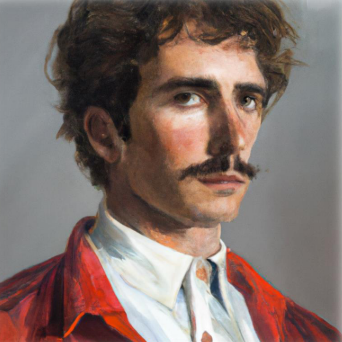
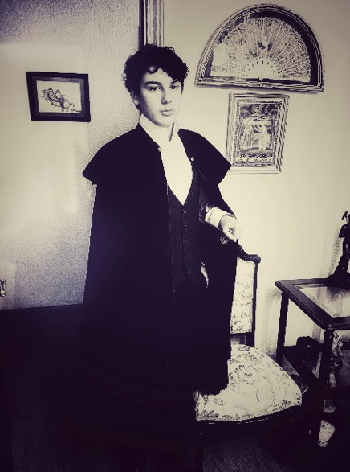

Sobre mi
Breve descripción
¡Hola! Soy Alex, el creador de este sitio web. Soy un apasionado de la informática y la tecnología, y he creado este proyecto para compartir mis conocimientos y experiencias en el campo de la ingeniería informática. Mi misión es solucionar problemas relacionados con la tecnología, software, hardware...
Actualmente, estoy estudiando Ingeniería Informática en la universidad Francisco de Vitoria.
Curriculum Vitae
Datos personales


- Nombre: Carlos Miguel de Serantes y Novoa
- Fecha de nacimiento: 29 de septiembre de 1824
- Dirección: Calle Falsa 123, Madrid, España
- Email: SerantesNovoa@gmail.com
Perfil personal
Tras una larga vida, una carrera de escritor exitosa, mi romanticismo ha llegado a su fin, ahora me interesa la ingeniría informática. Tras una vida sin tecnología, ahora siento la motivación por aprender cómo funciona esta. Ahora quiero ayudar a resolver problemas, no mediante la pluma, sino mediante el código.
Formación académica
- 1836 - 1839: Educación elemental, Seminario de Nobles, Madrid, España
- 1867 - 1871: Filología Hispánica y universal, Universidad Complutense de Madrid, Madrid, España.
- 2025 - Presente: Grado en Ingeniería Informática, Universidad Francisco de Vitoria, Madrid, España.
Experiencia laboral
- 1840 - 1867: Escritor, poeta y dramaturgo, Autónomo. Madrid, España. Autor de numerosas obras literarias, incluyendo novelas, poemas y obras dramáticas como "A terra da miña patria", "Las siete campanas de Toledo", "La apariencia del amor" o mi obra magna "El cantar del sino"
- 1872 - 1913: Escritor a tiempo parcial, Asesor financiero en Harvey's Railways INC. Manchester, Reino Unido.
- 1914 - 1918: Soldado de infantería voluntario en la Gran Guerra.
- 1919 - 1936: Escritor, Intelectual. A coruña, España.
- 1937 - 1938: Escritor. París, Francia.
- 1939 - 1945: Teniente Coronel del Ejército Aliado en la Segunda Guerra Mundial.
- 1946 - 1960: Guionista y director de cine, Heroe de guerra. Los Ángeles, Estados Unidos.
- 1961 - 1999: Inversor, Escritor de obras como "La crueldad de la guerra", "El ancla de los desamparados", "El silencio de los muertos" y "La sombra del tiempo". Zurich, Suiza.
- 2000 - 2024: Retirado. A Coruña, España.
- 2025 - Presente: Estudiante de Ingeniería Informática, Universidad Francisco de Vitoria, Madrid, España.
Redes Sociales
|
|
|
|